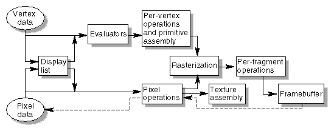

This book describes all the operations performed between when vertices are initially specified and fragments are finally written into the framebuffer. The chapters of this book are arranged in an order that facilitates learning rather than in the exact order in which these operations are actually performed. Sometimes the exact order of operations doesn't matter - for example, surfaces can be converted to polygons and then transformed, or transformed first and then converted to polygons, with identical results - and different implementations of OpenGL might do things differently.
This appendix describes a possible order; any implementation is required to give equivalent results. If you want more details than are presented here, see the OpenGL Reference Manual.

Figure A-1 : Order of Operations
All data, whether it describes geometry or pixels, can be saved in a display list or processed immediately. When a display list is executed, the data is sent from the display list just as if it were sent by the application.
All geometric primitives are eventually described by vertices. If evaluators are used, that data is converted to vertices and treated as vertices from then on. Vertex data may also be stored in and used from specialized vertex arrays. Per-vertex calculations are performed on each vertex, followed by rasterization to fragments. For pixel data, pixel operations are performed, and the results are either stored in the texture memory, used for polygon stippling, or rasterized to fragments.
Finally, the fragments are subjected to a series of per-fragment operations, after which the final pixel values are drawn into the framebuffer.
Geometric Operations
Geometric data, whether it comes from a display list, an evaluator, the vertices of a rectangle, or as raw data, consists of a set of vertices and the type of primitive it describes (a vertex, line, or polygon). Vertex data includes not only the (x, y, z, w) coordinates, but also a normal vector, texture coordinates, a RGBA color, a color index, material properties, and edge-flag data. All these elements except the vertex's coordinates can be specified in any order, and default values exist as well. As soon as the vertex command glVertex*() is issued, the components are padded, if necessary, to four dimensions (using z = 0 and w = 1), and the current values of all the elements are associated with the vertex. The complete set of vertex data is then processed. (If vertex arrays are used, vertex data may be batch processed and processed vertices may be reused.)
Per-Vertex Operations
In the per-vertex operations stage of processing, each vertex's spatial coordinates are transformed by the modelview matrix, while the normal vector is transformed by that matrix's inverse transpose and renormalized if specified. If automatic texture generation is enabled, new texture coordinates are generated from the transformed vertex coordinates, and they replace the vertex's old texture coordinates. The texture coordinates are then transformed by the current texture matrix and passed on to the primitive assembly step.
Meanwhile, the lighting calculations, if enabled, are performed using the transformed vertex and normal vector coordinates, and the current material, lights, and lighting model. These calculations generate new colors or indices that are clamped or masked to the appropriate range and passed on to the primitive assembly step.
Primitive Assembly
Primitive assembly differs, depending on whether the primitive is a point, a line, or a polygon. If flat shading is enabled, the colors or indices of all the vertices in a line or polygon are set to the same value. If special clipping planes are defined and enabled, they're used to clip primitives of all three types. (The clipping-plane equations are transformed by the inverse transpose of the modelview matrix when they're specified.) Point clipping simply passes or rejects vertices; line or polygon clipping can add additional vertices depending on how the line or polygon is clipped. After this clipping, the spatial coordinates of each vertex are transformed by the projection matrix, and the results are clipped against the standard viewing planes x = ± &ohgr; , y = ± &ohgr; , and z = ± &ohgr; .
If selection is enabled, any primitive not eliminated by clipping generates a selection-hit report, and no further processing is performed. Without selection, perspective division by w occurs and the viewport and depth-range operations are applied. Also, if the primitive is a polygon, it's then subjected to a culling test (if culling is enabled). A polygon might convert to vertices or lines, depending on the polygon mode.
Finally, points, lines, and polygons are rasterized to fragments, taking into account polygon or line stipples, line width, and point size. Rasterization involves determining which squares of an integer grid in window coordinates are occupied by the primitive. If antialiasing is enabled, coverage (the portion of the square that is occupied by the primitive) is also computed. Color and depth values are also assigned to each such square. If polygon offset is enabled, depth values are slightly modified by a calculated offset value.
Pixel Operations
Pixels from host memory are first unpacked into the proper number of components. The OpenGL unpacking facility handles a number of different formats. Next, the data is scaled, biased, and processed using a pixel map. The results are clamped to an appropriate range depending on the data type and then either written in the texture memory for use in texture mapping or rasterized to fragments.
If pixel data is read from the framebuffer, pixel-transfer operations (scale, bias, mapping, and clamping) are performed. The results are packed into an appropriate format and then returned to processor memory.
The pixel copy operation is similar to a combination of the unpacking and transfer operations, except that packing and unpacking is unnecessary, and only a single pass is made through the transfer operations before the data is written back into the framebuffer.
Texture Memory
OpenGL Version 1.1 provides additional control over texture memory. Texture image data can be specified from framebuffer memory, as well as processor memory. All or a portion of a texture image may be replaced. Texture data may be stored in texture objects, which can be loaded into texture memory. If there are too many texture objects to fit into texture memory at the same time, the textures that have the highest priorities remain in the texture memory.
Fragment Operations
If texturing is enabled, a texel is generated from texture memory for each fragment and applied to the fragment. Then fog calculations are performed, if they're enabled, followed by the application of coverage (antialiasing) values, if antialiasing is enabled.
Next comes scissoring, followed by the alpha test (in RGBA mode only), the stencil test, and the depth-buffer test. If in RGBA mode, blending is performed. Blending is followed by dithering and logical operation. All these operations may be disabled.
The fragment is then masked by a color mask or an index mask, depending on the mode, and drawn into the appropriate buffer. If fragments are being written into the stencil or depth buffer, masking occurs after the stencil and depth tests, and the results are drawn into the framebuffer without performing the blending, dithering, or logical operation.
Odds and Ends
Matrix operations deal with the current matrix stack, which can be the modelview, the projection, or the texture matrix stack. The commands glMultMatrix*(), glLoadMatrix*(), and glLoadIdentity() are applied to the top matrix on the stack, while glTranslate*(), glRotate*(), glScale*(), glOrtho(), and glFrustum() are used to create a matrix that's multiplied by the top matrix. When the modelview matrix is modified, its inverse transpose is also generated for normal vector transformation.
The commands that set the current raster position are treated exactly like a vertex command up until when rasterization would occur. At this point, the value is saved and is used in the rasterization of pixel data.
The various glClear() commands bypass all operations except scissoring, dithering, and writemasking.